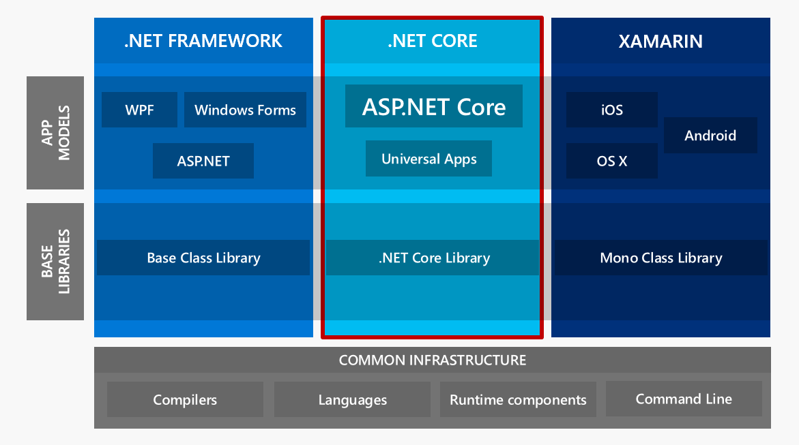

此為 .NET Core 與 ASP.NET Core 系列為文章目錄，本系列文章將為大家介紹 .NET Core 與 ASP.NET Core 並將如何運用它跨平台的特性去開發 Web App 並將其推至真實世界的雲端服務之上運行。最後會用一個專案實例如帶大家從系統的設計到架構運行，如何做到持續整合與開發並用最少的成本發揮最大的效能運行．
文章持續更新，最新更新時間: 2017-05-10
.NET Core and ASP.NET Core Introduction
ASP.NET Core 是一個基於.NET Core全新的跨平台Framework, 類似於使用已知的.NET Framework的方式，可以開發如電腦桌面程式、網頁應用程式、IoT應用程式與手機行動程式等不同的應用，並且正常運行在Windows, Mac與Linux上。而他也是完全的Open-source的Framework

.NET Standard
而這邊順便提起會有一個與ASP.NET Core有點關係的.NET Standard，簡單來講就是ASP.NET Core“未來”要呼叫的底層應用庫。
相較於先前那張一覽表，可以清楚地發現微軟想把目前三套不一樣的App Models運行在同一套底層應用庫，而非現在三套分別維護。而“現在”ASP.NET Core是跑在.NET Core上面的!
這對開發者來說是個好事，但不幸的是這還是有過渡期的
目前發行的版本為.NET Standard 1.6，可以看到包含了.NET Framework 4.6.2與ASP.NET Core 1.0(目前最新的是1.1)，而2.0目標則是有下面的既定目標:
Goal and Subject
要會在接下來的幾天會介紹與分享如何享受ASP.NET Core帶來的跨平台好處與其相關的生態圈。
由於開發上我們會在 macOS + visual studio code 為主來開發，所以對VSCode有興趣的朋友歡迎參考另外的VSCode分類
下面為目前計畫內容(內容會根據開發需求做調整)，過程當中主旨是希望實作一個具有存取DB資料的Web App並發佈至雲端使用:
Developement
Prerequisite
- ASP.NET and ASP.NET Core, .NET Framework and .NET core and .NET Standard
- ASP.NET Core Hello World on Windows
- ASP.NET Core Hello World on Mac
- ASP.NET Core play with Docker
- ASP.NET Core add Git Ignore File
- ASP.NET Core play with Solution File
Basic
- ASP.NET Core Middleware
- ASP.NET Core Framework-Provided Services
- ASP.NET Core IServiceCollection
- ASP.NET Core using Nuget with Visual Studio Code
- ASP.NET Core play with MSTest
- ASP.NET Core Create New Project Template
Data and Caching
- ASP.NET Core Caching
- ASP.NET Core Working with ADO.NET and MSSQL
- ASP.NET Core Working with Dapper and MSSQL
- ASP.NET Core play with Redis and StackExchange.Redis
- ASP.NET Core play with MongoDB and MongoDB .NET Driver
- ASP.NET Core play with MongoDB and MongoDB .NET Driver - Create
- ASP.NET Core play with MongoDB and MongoDB .NET Driver - Read
- ASP.NET Core play with MongoDB and MongoDB .NET Driver - Update
Logging
Web
- ASP.NET Core play with MVC
- ASP.NET Core play with WebAPI
- ASP.NET Core play with dotnet-watch
- Hosting ASP.NET Core Web Application on Kestrel
- Hosting ASP.NET Core Web Application on Kestrel with Reverse Proxy
Web Advance
- ASP.NET Core Set Hosting Environment
- ASP.NET Core play with SPA
- ASP.NET Core SPA Biobiolerplate with React and Redux
- ASP.NET Core Web Session with Redis
- ASP.NET Core play with SignalR Core
Continuous Delivery
- ASP.NET Core play with Docker
- ASP.NET Core Build up with Jenkins
- ASP.NET Core Build up with TravisCI
Hosting and Cloud
這邊都會以專欄的方式介紹，有興趣的朋友請到各專欄閱讀：
- ASP.NET Core Hosting on Cloud - Azure
- ASP.NET Core Hosting on Cloud - AWS
- ASP.NET Core play with Google Cloud Platform
Project Goal
這邊為了對學習有個目標，我們就來明定過程當中要做出來的網站功能。 在這接下來的日子內我們將實作一個可以會員資料的app，可透過該平台查詢會員資料，並透過後臺來管理該系統的資料。
前台會員系統
- 會員可以自行前台註冊
- 會員可以更改個人資料
- 會員可以瀏覽系統公告
- 會員可以在系統收到推播訊息
後台管理系統
- 需登入才可以進入系統
- 會員管理
- 公告管理
- 推播管理
- 系統管理
過程當中會加減帶到系統功能的開發，最後希望在活動結束的時候這個demo site也能同時上線
References
過程中找到學習資料統一更新至此處以便閱讀
.Net Core
- ASP.NET Core and .NET Core Overview
- Overview of the new .NET Core and .NET Platform Standard
- Introduction to ASP.NET Core
ASP.NET Core quick build “dev” branch feed
這是產品團隊所使用的 “開發版” 元件清單，也就是 GitHub 裡面 dev branch 的實際內容，你可以在這最快速的看到每個元件目前最新的版號與更新時間．
Web Host
- Kestrel
- Kestrel with IIS
- Kestrel with Nginx
- Kestrel with Apache
- WebListener
- Open Web Interface for .NET (OWIN) guide
Third Party Library
Architecture/Template/Framework
- Microsoft.AspNetCore.SpaServices
- Squidex is an open source headless CMS
- ASP.NET Zero
- ASP.NET Boilerplate
- ASP.NET Boilerplate - Module Zero
VS Code
General
ASP.NET Core
End
內容看起很多但主要是把目前實作一個網站會用到的大部分技術都包裹在內，希望能將此技術實際用在真實的商場上而非只將此當作實驗性質的技術為目標。對此系列內容有興趣或是有任何建議歡迎留言與討論!讓我們一起學習吧!